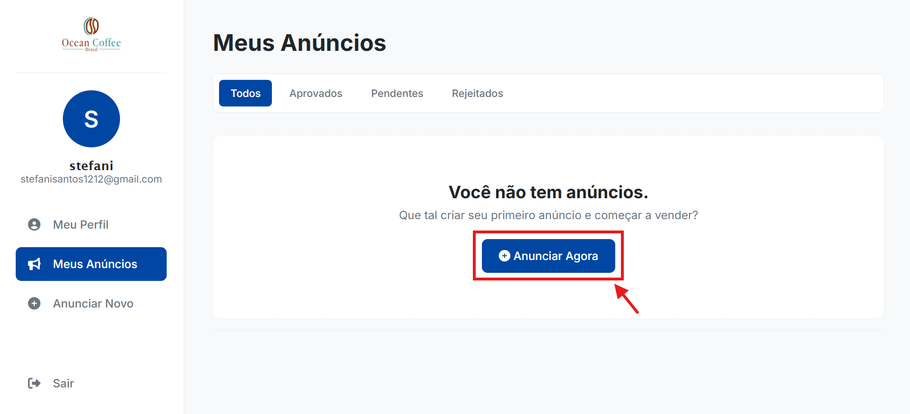

Bem-vindo à Ocean Coffee
Nós preparamos este guia simples para te ajudar a dar os primeiros passos na nossa plataforma. Siga as instruções abaixo para criar sua conta e começar a anunciar seus grãos e máquinas agrícolas.
Nenhum resultado encontrado para a sua pesquisa.
1. Como criar sua conta (Cadastro)
Antes de poder vender ou comprar, você precisa criar o seu perfil na plataforma. É rápido e gratuito!
- Acesse a página inicial da Ocean Coffee e procure pelo botão "Cadastre-se" na parte superior da tela.
- Preencha os campos com os seus dados reais: Nome completo, E-mail e crie uma Senha que você não vá esquecer.
- Clique no botão de confirmação. Pronto! Sua conta foi criada com sucesso e você já faz parte da nossa comunidade.
2. Como entrar no site (Login)
Sempre que você sair do site e voltar depois, precisará entrar novamente para acessar seus dados.
- Clique no botão "Login" ou "Entrar".
- Digite o e-mail e a senha que você escolheu na hora do cadastro.
- Caso tenha esquecido sua senha, não se preocupe! Basta clicar em "Esqueci minha senha", colocar seu e-mail e nós enviaremos as instruções para você criar uma nova.
3. Como colocar um anúncio no site
Quer vender seu café ou um trator? Veja como é fácil publicar seu produto na nossa vitrine.
- Certifique-se de que você já fez o Login na sua conta.
-
Acesse o seu painel e clique em "Meus Anúncios" no menu lateral. Caso você ainda não tenha nenhum produto publicado, clique no botão azul "Anunciar Agora" no centro da tela. Você também pode usar a opção "Anunciar Novo" diretamente no menu lateral em qualquer momento, conforme ilustrado abaixo:

- Preencha as informações do produto: coloque um Título chamativo, escolha se é Grão ou Máquina, digite o Preço e faça uma breve Descrição.
- Adicione fotos nítidas do produto. Boas fotos ajudam a vender mais rápido!
- Clique em Enviar.
4. Gerenciar meus anúncios
Você tem controle total sobre os produtos que já publicou.
- Acesse o seu painel e clique em "Meus Anúncios". Lá estará a lista de tudo que você já enviou.
- Editar: Escreveu algo errado ou quer baixar o preço? Basta clicar em editar e salvar as novas informações.
- Vendido: Vendeu o produto? Maravilha! Altere o status dele para "Vendido" para que outros clientes saibam que ele não está mais disponível.
- Exclusão: Caso tenha desistido de vender, você pode usar a opção de exclusão para apagar o anúncio do site.
5. Dúvidas Frequentes
Clique nas perguntas abaixo para revelar as respostas:
Como eu altero os dados do meu perfil?
Basta fazer o login, ir até a opção "Meu Perfil" e alterar seu nome, telefone ou e-mail. Não se esqueça de clicar em salvar no final da página para garantir que as alterações foram feitas com sucesso.
Pesquisei meu anúncio na loja e não achei. Por quê?
Todos os anúncios passam por uma verificação rigorosa de segurança antes de irem para a loja. Se você acabou de publicar, aguarde algumas horas até que nossos administradores façam a aprovação. Você pode conferir se ele foi aprovado na aba "Meus Anúncios".
Existe um tamanho limite para as fotos do anúncio?
Recomendamos o uso de fotos nítidas e com boa iluminação. O sistema aceita a maioria dos formatos de imagem (JPG, PNG), mas tente não enviar arquivos gigantescos (acima de 5MB) para não atrasar o seu upload.